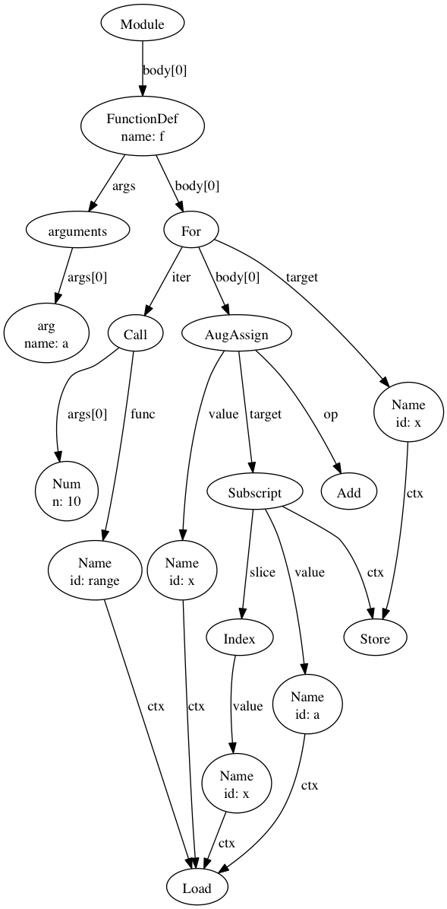
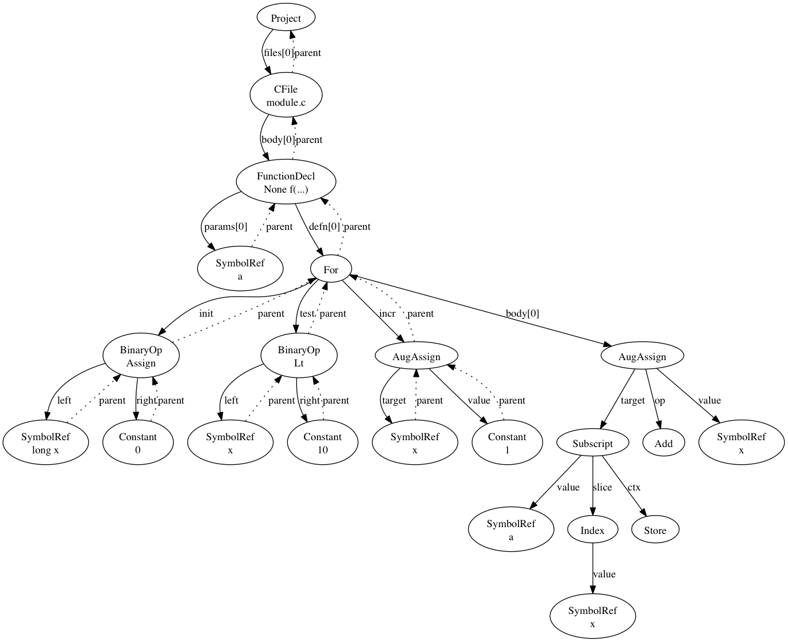

IPython provides a decent environment for visualizing the transformation of the abstract syntax trees (AST) of the specializaed kernels. Following these simple guidelines can make it easier to write and debug the multiple node transformation passes that are necessary to implement a specialized kernel
ipython can be installed in several different ways depending on your platform: See installing ipython. Just using pip seems to work fine on OSX.
In the shell:
cd $CTREE
ipython notebook
This will start an ipython server and open the dashboard window in the browser. From the dashboard click New Notebook. You will add one or more sections of python code in cells on the notebook page. The ipython interpreter for this page will be running just as if you had started the regular python interpereter.
In the first cell, lets import our tools and write a function who’s AST we shall visualize:
import ctree
def f(a):
for x in range(10):
a[x] += x
tree1 = ctree.get_ast(f)
ctree.ipython_show_ast(tree1)
Hit the play button, the tree should render and a new cell should be created below the tree image.
In the next cell let’s transform that tree using the basic py conversions:
from ctree.transformations import PyBasicConversions
t = PyBasicConversions()
tree2 = t.visit(tree1)
ctree.ipython_show_ast(tree2)
Once again hit the play button and the transformed tree will appear
